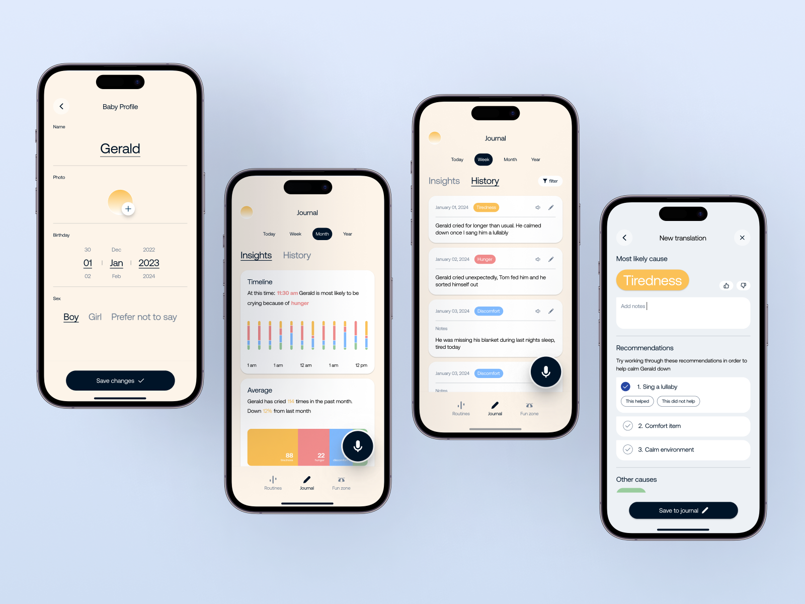
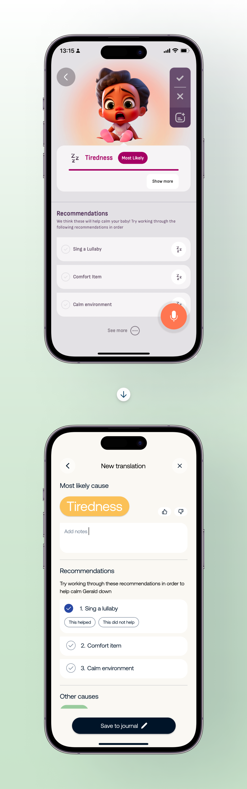
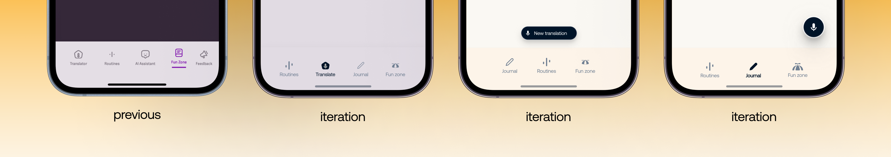
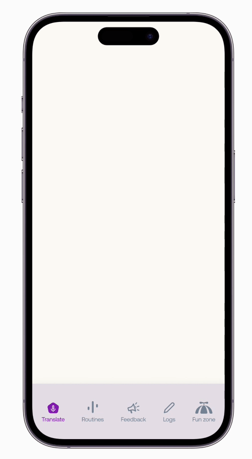
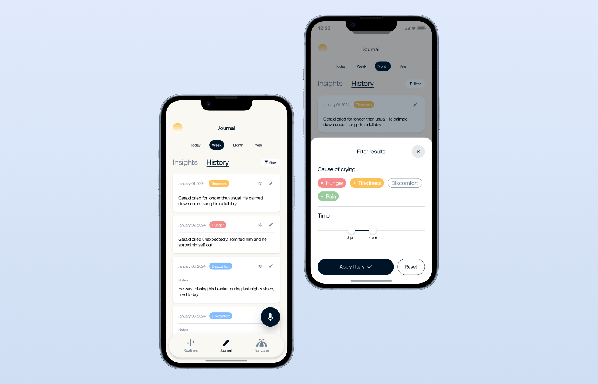
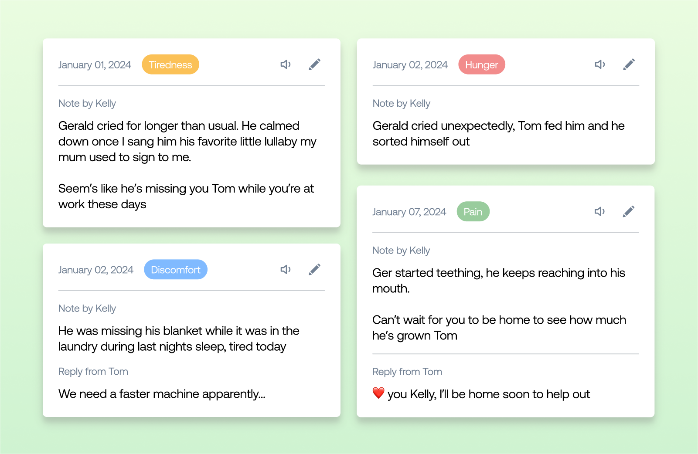

Nanni
Audience
Over 25k monthly caregivers
Team
Startup : pre-seed stage

About
Nanni is a mobile app that predicts why a newborn is crying, using a
hyper-accurate algorithm, while also offering caregivers the abilty to create & follow a
healthy sleep schedule.
– I worked with Ubenwa to redesign the application with a focus on product clarity &
brand maturity.

Goals
A. Organization
With the launch of new key features, and a growing base of users, the application had become
cluttered and difficult to navigate.
I would focus on organizing existing elements into a clearly defined hierarchy, while leaving
room
for new features coming down the road.
B. Maturity
Nanni is backed by scientific research, and uses pediatric science to provide tools for caregivers. We wanted to make sure the application relfected this.
C. Maintain the fun
While a redesign was inevitable, there was no need to remove the "fun" from the product. A balance needed to be struck between keeping the product fun for caregivers, while also clearly defining itself as a useful and usable tool.

The Redesign

The navigation menu went through several iterations, with intention to minimize actions, and prioritize recording a newborns cry.
– Feedback was moved to more pertinent locations across the experience, garnering more
direct
feedback
from caregivers.
–Logs were renamed as Journal, found to be more of a human representation of the feature.
– Translation became a floating action button, allowing caregivers to have instant access across the
application, and never miss a cry or journal entry.
– The navigation menu itself became a floating bar, that got out of the way when the user was
interacting with content across the experience.

Other feature changes
Logs went through a transformation and became Journal, a home for all recorded cries.
Split into two tabs, Journal matured into a space where caregivers could glean insights, and view their
history.

Journal : Insights
Caregiver's recorded cries generate insights, allowing them to further understand causes, trends and averages across their newborns data.

Journal : History
A filterable history of all recorded cries or events. Visible by other caregivers for posterity and support.
